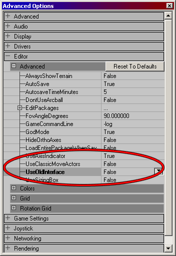
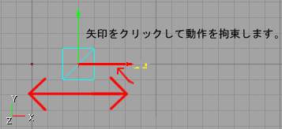
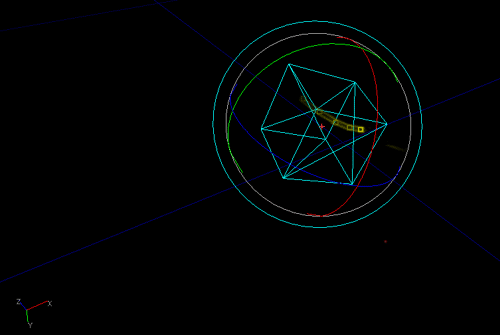
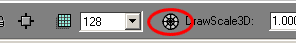
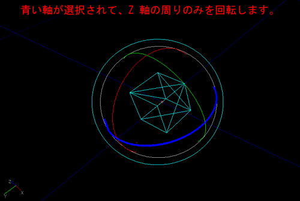
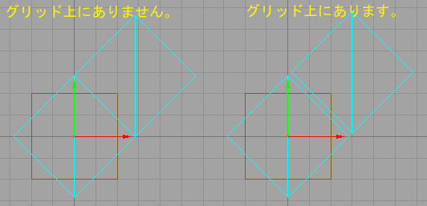

UDN
Search public documentation:
RotationGizmoJP
English Translation
한국어
Interested in the Unreal Engine?
Visit the Unreal Technology site.
Looking for jobs and company info?
Check out the Epic games site.
Questions about support via UDN?
Contact the UDN Staff
한국어
Interested in the Unreal Engine?
Visit the Unreal Technology site.
Looking for jobs and company info?
Check out the Epic games site.
Questions about support via UDN?
Contact the UDN Staff
回転装置
ドキュメントの概要： 回転装置（UDN ビルドでのみ利用できます）のためのリファレンス。 ドキュメントの変更ログ： Rotating Multiple Objects（複数オブジェクトを回転する）セクションを含めるために、 Chris Linder （DemiurgeStudios）により最終更新。原作 Jason Lentz （DemiurgeStudios）。サポートに関するお断り
本書で記述されているコードは、UDN またはその他のライセンス取得者へのサービスとして提供されています。Epic社によるサポートはありません。 注意：この機能はUDN ビルドのみです。はじめに
この新しい機能によって、アクタをより一層容易に操作、コントロールできます。理想的なことに、希望次第で、このツールによってパースペクティブ ビューポートのみを使用できるようになります。本書では、お客様の効率を向上させるために、この機能をどのように活用できるかについて説明しています。回転装置をアクティブにする
この機能は、好みに応じてオン/オフできます。これをセットするには、View（表示）メニューへ行き、Advanced Options（アドバンス オプション）を選択します。エディタのロールアウトに、UseOldInterface（古いインターフェイスを使用）と呼ばれる設定とUseClassicMoveActors（クラシック ムーブ アクタを使用）と呼ばれる設定があります。
UseOldInterface（古いインターフェイスを使用）が、False（偽）にセットされると、回転装置が起動します。そうでない場合は、この設定が示しているように、「UnrealEd キー 組合せの早見表」文書に記述されている通り、古いインターフェイスが使用されます。たとえ回転装置のスイッチが切られていても、回転装置を機能させ、適切に回転するように追加されたコードの一部は、依然として有効です。UseClassicMoveActors（クラシック ムーブ アクタを使用）をTrue（真）にセットすると、オブジェクトを変換するために古い回転コードが使用されます。これらの変数の両方がセットできることによって、コードがどのように機能するかとは関係なく好きなインターフェイスを選択できます。 要約すると、回転装置のスイッチを入れるには、UseOldInterface（古いインターフェイスを使用）とUseClassicMoveActors（クラシック ムーブ アクタを使用）を両方Falseにセットします。回転装置のスイッチを完全に切るには、UseOldInterface（古いインターフェイスを使用）とUseClassicMoveActors（クラシック ムーブ アクタを使用）の両方をTrueにセットします。自由な変換
いずれのビューポートからもアクタを変換するには（パースペクティブ ビューポートを含む）、Ctrl を押すと同時にマウスを右クリックし、ドラッグするだけです。動作は、 パースペクティブ ビューポートの XY 平面と2D ビューポートの表示平面に拘束されます。パースペクティブ ビューポートでアクタを垂直に移動させたいときは、Ctrl を押すと同時にマウスを左および右クリックしてドラッグします。拘束のある変換
拘束のある変換は、2D ビューポートでのみ使用されます。これをアクティブにするには、希望する色の矢印（X - 赤、Y - 緑、Z - 青）を選択し、次に、Ctrl を押すと同時にマウスを左クリックしてドラッグする機能を使用するときに、選択された矢印の線が濃くなり、アクタはその軸に拘束されます。
自由な変換モードに戻るには、強調された矢印を再クリックするだけです。選択が解除されます。自由な回転
パースペクティブ ビューポートでは、 Ctrl を押すと同時にマウスを右クリックして、回転装置の表面を横切ってドラッグすることによって、アクタを自由に回転できます。回転装置は、回転装置の表面を横切るマウスの動きに従うとき、まるでトラックボールが転がるように動作します。
回転装置は、一つの場所から次の場所へ急に速く動くとき、少しがたがたすることに気が付かれるかも知れません。これは、回転グリッドをオンにしているからです。Unreal Ed の一番下の回転グリッド ボタンを選択解除することによって、回転グリッドのスイッチを切ることができます。
しかし、BSP ブラシをグリッドをオフにして回転させる場合、偶然に厄介な BSP ホールを生じ易くする可能性があることに注意してください。拘束のある回転
回転装置を特定の軸に拘束するには、2D ビューポートの一つにある選択されたアクタを回転するか、回転装置を構成する色の付いたバンドの上をクリックするかします。ボールドのバンドは、回転装置がその周りを回る軸です（X - 赤、Y - 緑、Z - 青）。
アクタを回転するためにバンドを使用するときは、回転装置の表面をドラッグする必要はありません。複数オブジェクトを回転する
複数オブジェクトを回転する場合は、すべてのオブジェクトが、回転装置の中心の周りを回転します。回転装置の中心は、通常、選択された最初のオブジェクトです。 複数オブジェクトの回転には、グリッド上に保つための固有の問題があります。例えば、接している２つのキューブを取り上げて、４５度回転させましょう（8192 Unreal 回転ユニット）。次の２つの内のどちらかが生じる可能性があります。キューブは接しているが、２番目のキューブがグリッドから外れているか、もしくは、両方のキューブがグリッド上に残っているが、もはや接していないかのどちらかの可能性があります。説明図が以下にあります。
回転装置を使用すると、グリッドがオンの場合、オブジェクトは一つもグリッドから外れません。回転している間、オブジェクトがグリッド上に留まろうとして、とても奇妙な様子が結果として現れることがあります。グリッドをオフにした場合、最初のオブジェクトはグリッド上に留まりますが、２番目のオブジェクトは、２つのオブジェクトの接触を保とうとして、グリッドから外れます。グリッドのスイッチをオフにするのには気をつけてください。というのは、たとえオブジェクトを90度回転させて、2番目のオブジェクトがグリッド上にあるように見えたとしても、そうではない可能性があるからです。たくさんの接するオブジェクトを90度または180度回転させて、グリッド上に保ちたい場合は、グリッドをオンにして、回転グリッド サイズを90度に変更してください（16384 Unreal 回転ユニット）。回転グリッド サイズは、次のようにしてセットできます。Edit->Advanced Options->Editor->Rotation Grid（編集 - アドバンス オプション - エディタ - 回転グリッド） （注意：回転装置ができる以前は、複数のオブジェクトを回転させた時はいつでも、回転グリッド サイズの大きさを90度かそれ以上にしないと、最初のオブジェクト以外はすべてグリッドがら外れ落ちました。）シフト ドラッグ
カメラと選択されたアクタの両方を操作するために、Ctrl キーの代わりにShift キーを使用できます。Shift を押すと同時にマウスの左クリックを使用してドラッグする場合、カメラはアクタとともに動きます。しかし、Shift を押すと同時にマウスの右クリックを使用してドラッグする間は、選択されたアクタは、カメラがその周りを回転している間動きません。アクタが一つも選択されない場合は、回転装置のみが影響を受けます。アクタを選択すると直ぐに、回転装置はそのアクタの方向決めをします。既知のバグ
- グリッドのスナッピングにはいくつかの小さな問題があり、数個のオブジェクトを選択して、変換グリッドか回転グリッドのいずれかを切り替える時に発生します。これらの問題を避けるためには、すべてのオブジェクトを選択解除し、グリッドを希望通りにセットし、オブジェクトを再び選択します。
- 変換グリッドと回転グリッドが外れていて、複数オブジェクトを回転させている場合、オブジェクトはドリフトする傾向にあり、したがって、関連する回転は、回転を開始した時と同じではありません。この問題は、回転グリッドがオンの場合にも発生しますが、非常にわずかで、1の通りです。